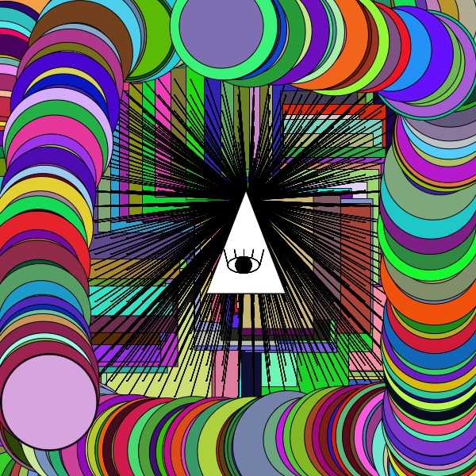
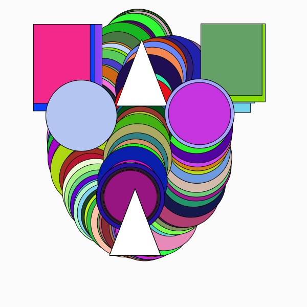
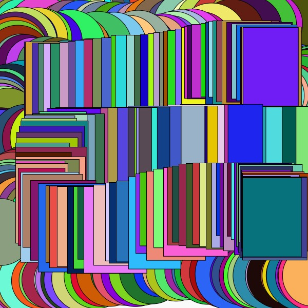

This DIY photoshop was made by using Processing and P5js. A completed code can be found under these examples.
  var img; var initials ='tp'; // your initials var choice = '1'; // starting choice, so it is not empty var screenbg = 250; // off white background var lastscreenshot=61; // last screenshot never taken function preload() { img = loadImage('https://mar3htlr9.github.io/hamchoi/fall2018reveal.jpg'); } function setup() { createCanvas(600, 600); // canvas size background(screenbg); // use our background screen color } function draw() { if (keyIsPressed) { choice = key; // set choice to the key that was pressed clear_print(); // check to see if it is clear screen or save image } if (mouseIsPressed) { newkeyChoice(choice); // if the mouse is pressed call newkeyChoice } } function newkeyChoice(toolChoice) { if (toolChoice == '1' ) { // first tool stroke(01); line(mouseX, mouseY, pmouseX, pmouseY); } else if (toolChoice == '2') { // second tool drawA(); } else if (toolChoice == '3') { // third tool drawB(); } else if (toolChoice == '4') { drawC(); } else if (key == '5') { // this tool calls a function testbox(); } else if (toolChoice == '6') { drawD(); } else if (toolChoice == '7') { fill(100, 200, 100); rect(mouseX, mouseY, 20, 20); } else if (toolChoice == '8') { fill(300, 100, 0, 80); rect(mouseX, mouseY, 20, 20); } else if (toolChoice == '9') { fill(300, 100, 0, 80); rect(mouseX, mouseY, 40, 40); } else if (toolChoice == '0') { stroke(0, 0); fill(random(255), random(255), random(255), random(255)); rect(mouseX, mouseY, 200, 150); } else if (toolChoice == 'g' || toolChoice == 'G') { // g places the image we pre-loaded image(img, mouseX, mouseY, 200, 200); } } function testbox() { // this is a test function that will show you how you can put your own functions into the sketch x = mouseX; y = mouseY; fill(random(0,255), random(0,255), random(0,255)); rect(x, y, 40+random(50, 100), 100+random(40, 80)); } function drawA() { x = mouseX; y = mouseY; fill(255); triangle(x, y-50, x-50, y+80, x+50, y+80); } function drawB() { x = mouseX; y = mouseY; fill(0); circle(x, y, 10); noFill(); arc(x, y, 40, 20, 0, PI); arc(x, y, 40, 20, PI, 0); line(x, y, x, y-20); line(x-10, y-10, x-12, y-20); line(x-20, y, x-25, y-20); line(x+10, y-10, x+12, y-20); line(x+20, y, x+25, y-20); } function drawC() { x = mouseX; y = mouseY; fill(random(0,255), random(0,255), random(0,255)); circle(x, y, 20+random(30, 50), 30+random(10, 40)); } function drawD() { x = mouseX; y = mouseY; for (var j = 100; j <= height-100; j += 20) { for (var i = 100; i <= width-100; i += 20) { noFill(); ellipse(i , j, 1, 1); // Draw a line to the center of the display line (i , j, x, y); } } } function clear_print() { // this will do one of two things, x clears the screen by resetting the background // p calls the routine saveme, which saves a copy of the screen if (key == 'x' || key == 'X') { background(screenbg); // set the screen back to the background color } else if (key == 'p' || key == 'P') { saveme(); // call saveme which saves an image of the screen } } function saveme() { filename= initials + day() + hour() + minute() + second(); if (second() != lastscreenshot) { // don't take a screenshot if you just took one saveCanvas(filename, 'jpg'); } lastscreenshot= second(); // set this to the current second so no more than one per second }
Back to landing page